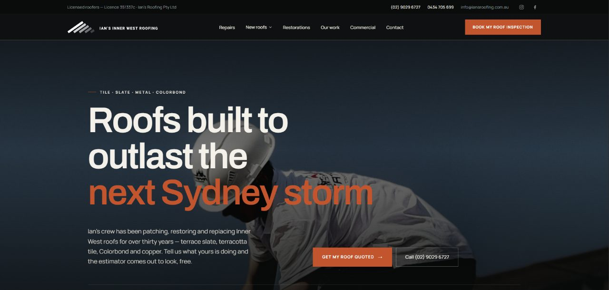

Roofing website design in Sydney: what homeowners check before they call
Sydney is big, the jobs are spread across hundreds of suburbs, and many roofing sites look much the same. A homeowner in Penrith or Manly checks a few things before picking up the phone.

A Sydney roofing website needs to show three things fast: that you work in the visitor's part of the city, that you handle the job they have (usually a leak or storm damage), and how to reach you from a phone. Regional service pages, real job photos with suburbs named, your NSW licence number and a short quote form cover most of it.
Most roofers in Sydney get work the same way: a homeowner notices a stain on the ceiling after a storm, searches for a roofer near them, opens three or four sites and calls the one that looks most like it will turn up. The website often decides which of those four gets the call. Roofing sites that miss out tend to fail for a few common reasons.
01Do you need a page for every Sydney suburb?
A homeowner in Castle Hill and one in Marrickville are searching for different things, even if both type "roofer near me". The housing stock is different, the travel time is different, and they want to know you work in their area. A single homepage that says "servicing all of Sydney" does not convince either of them.
A better approach is a short list of service-area pages, one for each region you cover. For most roofers that means four or five pages, not fifty:
- Inner West and the inner city: Marrickville, Leichhardt, Newtown, Balmain. Lots of Federation and Victorian-era houses with terracotta or slate.
- Western Sydney: Parramatta, Blacktown, Penrith, Liverpool. Newer estates, concrete tile and Colorbond, plus plenty of older fibro homes.
- The Hills District: Castle Hill, Baulkham Hills, Kellyville. Larger homes, re-roofs and gutter guard work.
- Northern Beaches and the North Shore: Manly, Dee Why, Chatswood, Hornsby. Salt air on the coast, heritage rules in some pockets.
- Sutherland Shire and the south: Cronulla, Miranda, Engadine. Coastal exposure on one side, bushland on the other.
Each page should say something true about that area: the roof types you see there, a job you did nearby, the suburbs you will drive to. If you swap the suburb names and the page still reads the same, Google may treat it as a near-copy, and the homeowner will notice too.
02What do homeowners search for after a Sydney storm?
Sydney storm season runs roughly from spring into autumn, and hail is the event that fills a roofer's phone. The April 1999 hailstorm across the eastern suburbs was one of the costliest natural disasters in Australian history for insurers, and smaller hail days still crack tiles and dent gutters.
When that happens, homeowners search in a hurry. Your site needs to handle that visitor properly:
- A phone number that is tappable on mobile and visible without scrolling.
- A clear line on whether you do emergency tarping or make-safe work, and how fast.
- A short note on insurance: whether you provide reports for claims, and what the homeowner should photograph first.
- Photos of real storm repairs you have done, with the suburb named.
Coastal suburbs bring a different problem. Salt air shortens the life of fixings, flashings and some metal finishes. If you know which Colorbond finishes and fasteners suit a Northern Beaches house within a kilometre of the water, say so on the site. Specific detail like that reads as expertise.
03Where Sydney roofing sites lose the call
The usual problems look like this:
- Stock photos of American shingle roofs. Sydney homeowners notice, and it tells them you did not take the photos yourself.
- No licence number. NSW homeowners are told to check a contractor's licence, and many look for it on the site before calling.
- Quote forms with ten fields. On a phone, after a storm, most people will not fill them in. Name, phone, suburb and a photo upload is enough.
- Slow loading on mobile data. Large uncompressed gallery images are the usual cause.
- Service areas listed as one long paragraph of suburb names at the bottom of the page. It does nothing for search and looks like spam.

04Which pages should a Sydney roofing site have?
If I were building a site for a Sydney roofer from scratch, the page list would be short:
- A homepage that says what you do, where, and how to reach you, in the first screen.
- One page per service: roof restoration, re-roofing, repairs, gutters and downpipes, storm damage.
- Four or five service-area pages written for the regions above.
- A project gallery with suburb, roof type and a sentence on what was done.
- An about page with your licence, insurance and a photo of the actual team.
None of that list is unusual. Sites usually miss it because they were built from a template and never properly filled in. You can see how I approach trade sites on the work page.
05Common questions
Do I need a separate page for every Sydney suburb?
No. A handful of regional pages with real local detail will do more than a hundred thin suburb pages. Google is good at spotting pages that only swap the place name.
How long does a roofing website take to build?
The timing depends mostly on how quickly photos and job details arrive, so it varies from one business to the next. If you want a figure for your business, send a short brief.
What should go on a roofer's homepage?
What you do, the areas you cover and a phone number, all in the first screen on a phone. After that, a few real job photos and a short line on your licence and insurance. The longer story about the business can sit lower down or on the about page.
Do roofing websites need a blog?
Not to start with. Service pages and area pages bring in most enquiries. A few useful articles, like what to do after hail damage, can help later if they answer questions your customers actually ask.
How do I get more Google reviews?
Ask straight after a job goes well, while the customer is still pleased, and send the review link by text so it takes one tap. Reply to every review, including the bad ones, calmly and with specifics.
If you run a roofing business in Sydney and your site is not bringing in calls, tell me what is going on. I will reply in writing with what I would change first. If you are in Melbourne, the Melbourne guide covers a very different set of roofs.